How to Use DiDi in China as a Foreigner
TL;DR — The Short Version
- DiDi China: Ride Hailing is China's Uber — English interface, foreign phone numbers, international card support.
- ⚠️ Do NOT download "DiDi Rider." That's the international version and it doesn't work in mainland China.
- Rides are cheap. ¥12–18 for short trips, ¥20–50 across town. All prices shown upfront before you confirm.
- English interface for standard rides. GPS sets your pickup. The driver already knows where to go. In-app messages auto-translate for most situations.
- Get out and walk away. Enable auto-pay and the fare deducts automatically — no cash, no tipping, no awkward payment moment.
The App That Replaced Waving at the Curb
Last month a friend landed at Hangzhou Xiaoshan Airport, walked outside, opened an app, and had a car pull up 3 minutes later. No Chinese. No cash. No standing at the curb with his arm out hoping a taxi would stop. He texted me from the back seat: "this is actually better than Uber."
That's DiDi — China's ride-hailing giant, with over 70% market share and service in more than 400 cities. And since late 2024, it's become dramatically easier for foreign travelers: English interface, foreign phone number registration, and direct international credit card support. Here's exactly how to set it up and book your first ride.
Set Up DiDi — Step by Step
1 Register with your phone number
Open the app and tap Account in the bottom-right corner. You'll land on the login page — no need to set language first; if your phone is in English, the app defaults to English.
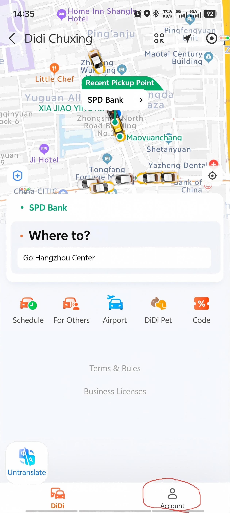
Select your country's area code, enter your phone number, and complete the SMS verification. That's it — you're registered. Foreign phone numbers work; you don't need a Chinese SIM.
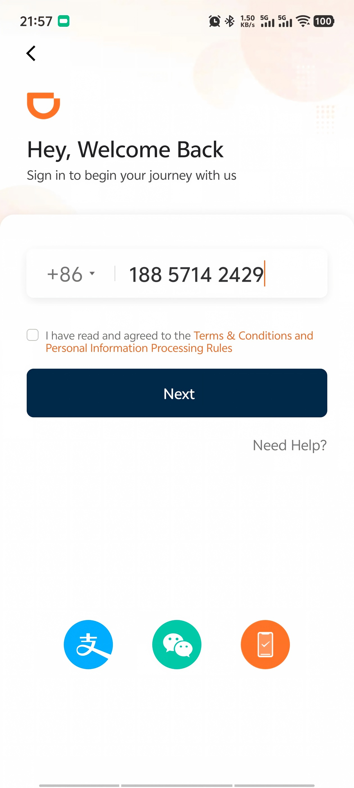
2 Add a payment method
DiDi is almost entirely cashless — to book anything beyond a traditional taxi, you need an online payment method. Tap Account (bottom-right) —Wallet —Payment Methods.
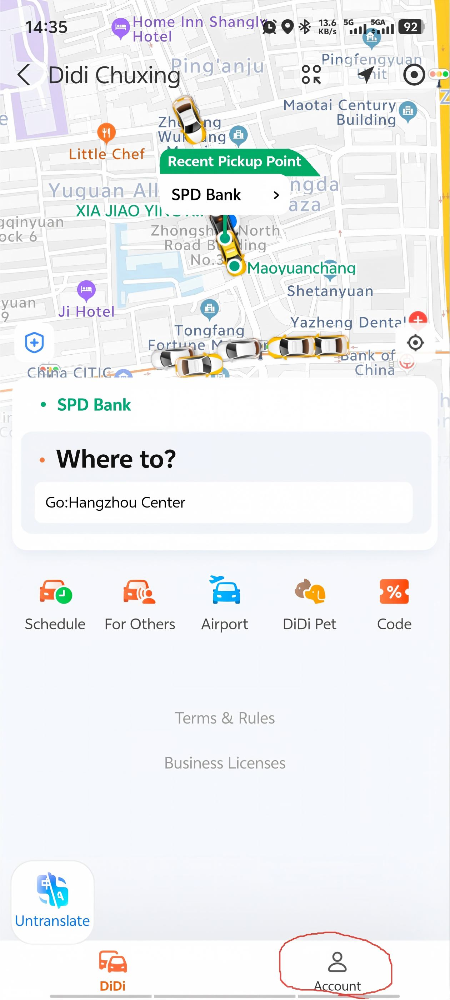
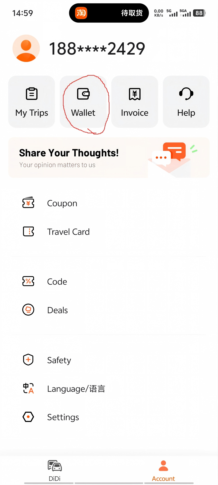
Supported options: Visa and Mastercard credit and debit cards, plus Alipay, WeChat Pay, and other digital wallets as shown in the app. Pick whichever works for you and follow the prompts to link it.
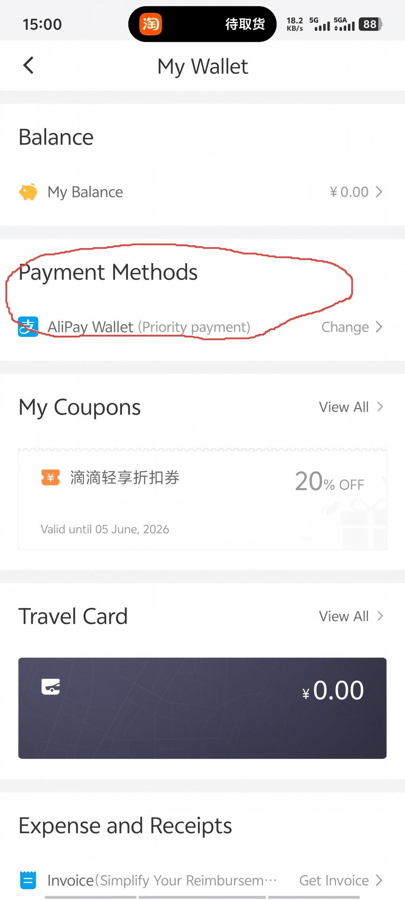
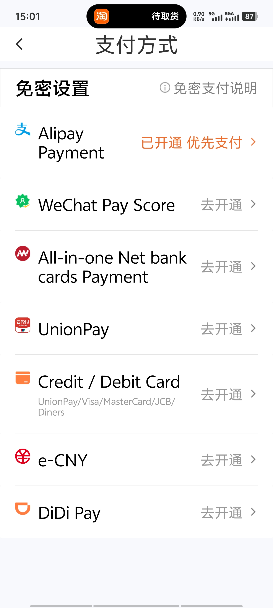
I recommend enabling password-free auto-payment. It's capped at a set amount per transaction, and it means you can just get out and walk away when the ride ends — the fare deducts automatically. No fumbling with your phone while the driver waits.
3 Book your first ride
Allow DiDi to access your location (this lets the app detect where you are and shows the real-time distance to your driver). On the home screen, tap "Where to?" and enter your destination. You can type in English — most hotels, landmarks, and metro stations are recognized.
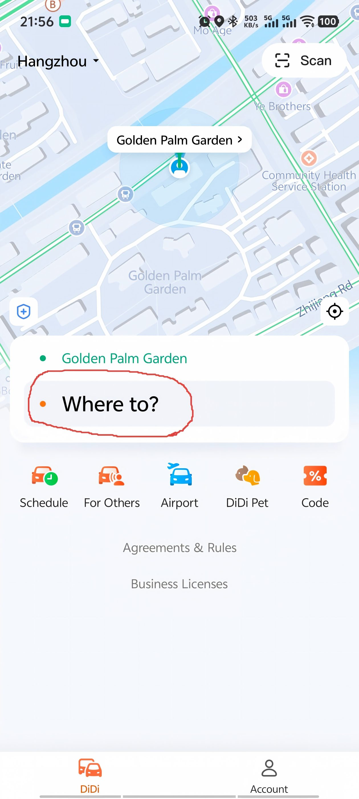
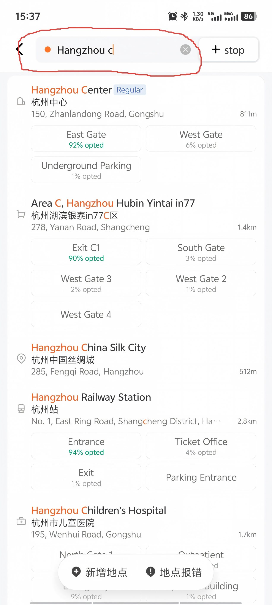
DiDi automatically picks the fastest route. You can tap to choose a different vehicle type — Express (standard, cheapest), Comfort (nicer car, slightly more), or Premier (luxury). Higher price = nicer vehicle. When you're ready, tap Confirm and DiDi matches you with a driver.
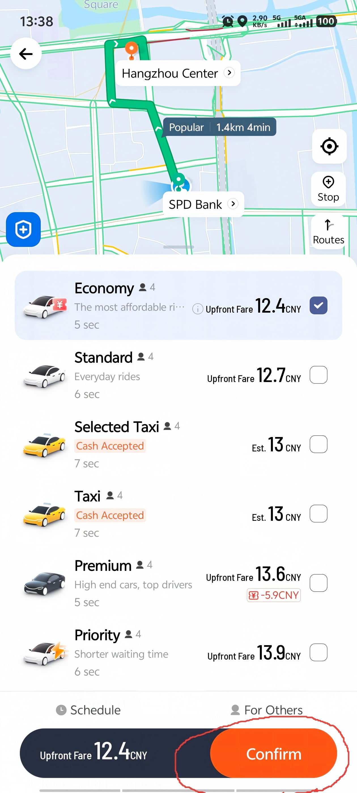
4 You're matched — now wait (usually 2–5 minutes)
Once matched, you'll see the driver's photo, vehicle type, license plate number, car color, and real-time distance on a map. In China, ride-hailing matches are usually very fast, but I recommend booking 5–10 minutes before you actually need to leave — gives you time to get your shoes on.
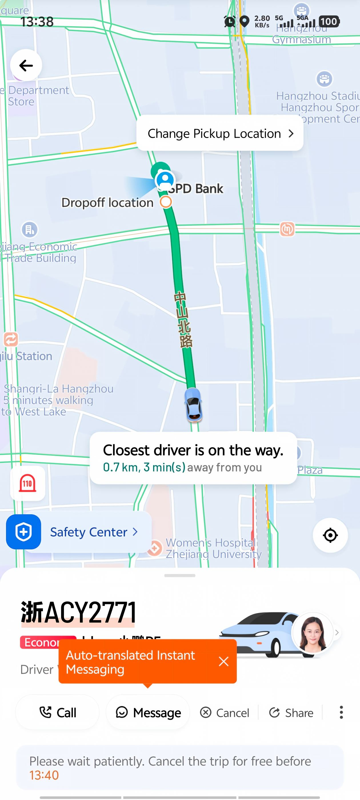
5 Message the driver while you wait
While the car is on its way, you can message the driver in real time — messages are auto-translated, which usually bridges the gap. If the driver needs to clarify your pickup spot or there's a gate the car can't enter, you'll see it in English and can reply right back.
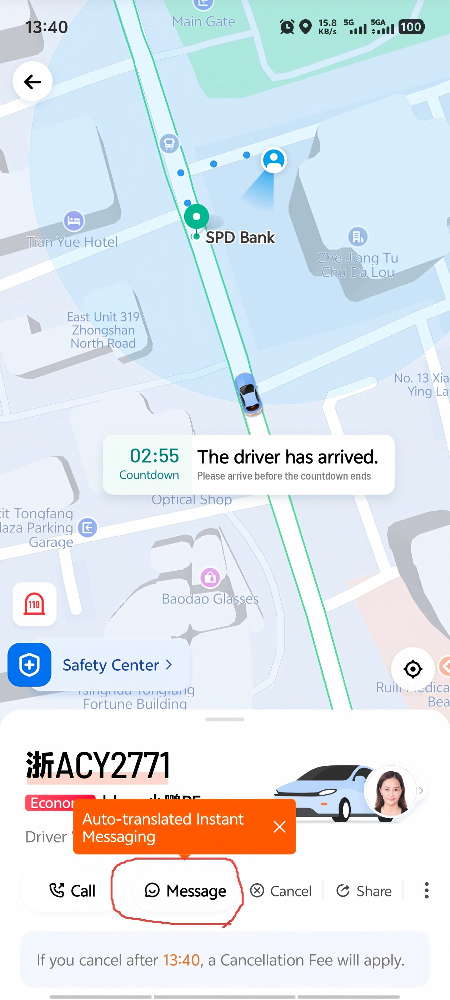
6 Safety check — tap the blue shield
While you wait, tap the blue cross/shield icon in the top-left corner. This opens the Safety Center, where you can enable trip sharing (send your live location to a friend), read safety tips, or use the one-tap emergency alarm — it connects directly to 110 (police). China is generally very safe for travelers, and DiDi's safety features are useful for travelers.
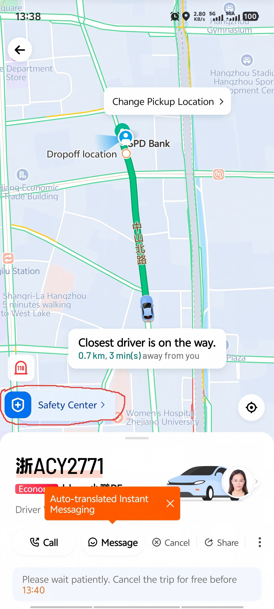
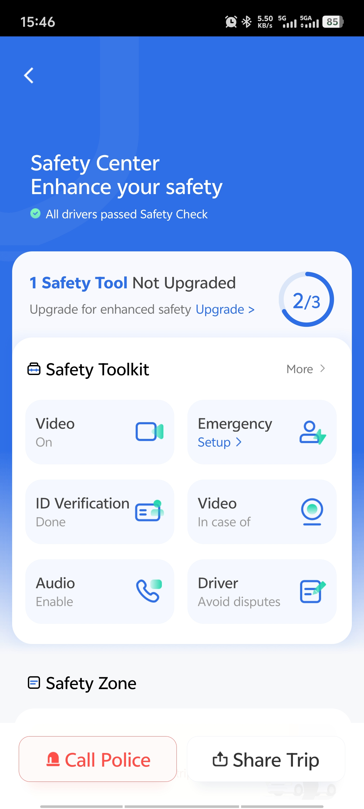
7 The car is here — match the plate and get in
When the car arrives, use the details on your phone to locate it — match the license plate number before opening the door. At busy spots like train stations and airports, multiple people are waiting for their DiDi, and getting into the wrong car is awkward for everyone.
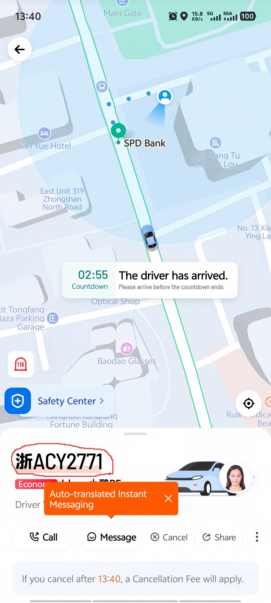
8 Arrive, get out, walk away
When you reach your destination, just get out. If you enabled auto-pay, the fare deducts automatically — no cash, no tip, no "do I pay now?" moment. If you didn't enable auto-pay, DiDi will remind you of the outstanding amount the next time you open the app.
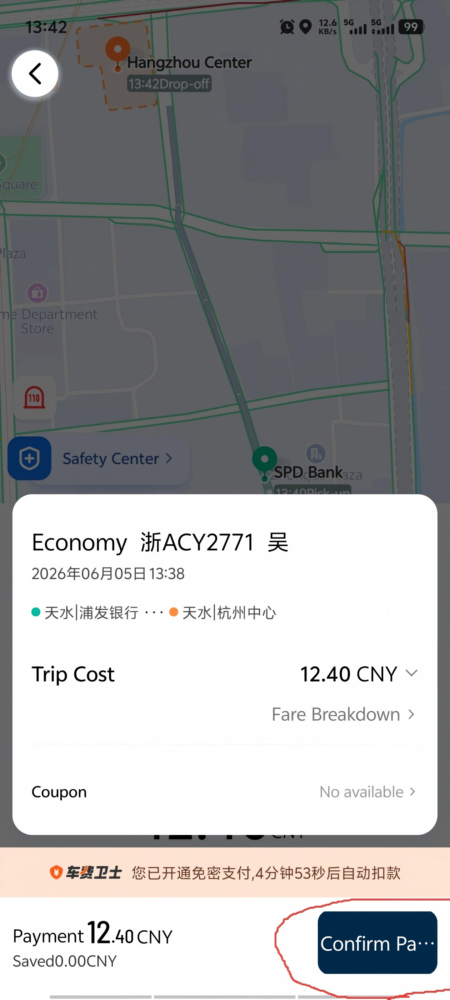
Using DiDi at Chinese Airports
Here's something nobody tells you before you land: Chinese airports have designated ride-hailing pickup zones. You can't just walk outside and get picked up at the curb — the car won't be there, and the driver will message you saying "I'm at P2 B3" while you're standing at P1 wondering what went wrong.
Walk to the ride-hailing pickup zone first, then book. Follow signs for "网约车 (ride-hailing pickup) — don't wait at the arrivals exit. You'll usually need to walk to a specific parking level or zone (the signs are clear once you know to look for them). Only book your DiDi once you're there, so you don't end up with the driver already waiting while you're still finding the right floor.
At major airports like Shanghai Pudong, Beijing Capital, and Hangzhou Xiaoshan, the walk from arrivals to the pickup zone takes 3 to 10 minutes. This is normal — the pickup zones are set further from the terminal to avoid congestion. Follow the 网约车 signs, find the zone, then book. Skip the regular taxi queue that's usually 40 people deep.
Alternative: Use DiDi Inside Alipay or WeChat
If you've already set up Alipay or WeChat Pay and don't want another app, you can use DiDi's mini-program directly inside either app. It's the same service, same cars, same drivers — just no extra download.
Via Alipay
Open Alipay, tap Search at the top, type "didi," and select the orange DiDi Chuxing result. The first time, you'll see a login prompt — just confirm and tap one-tap login. After that, the flow is identical to the app: Where to? — choose car type — Confirm — ride. Payment defaults to Alipay automatically.
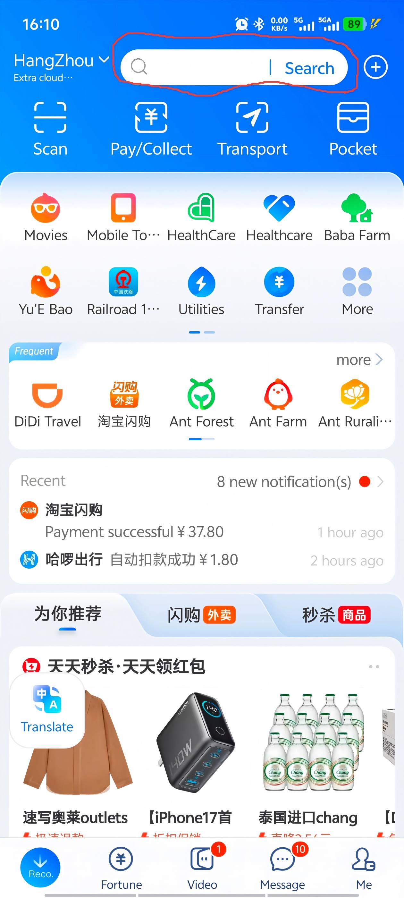
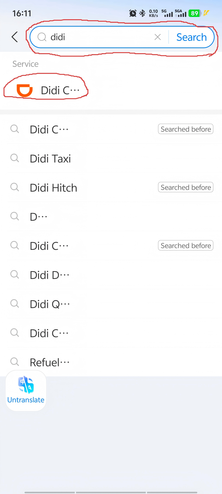
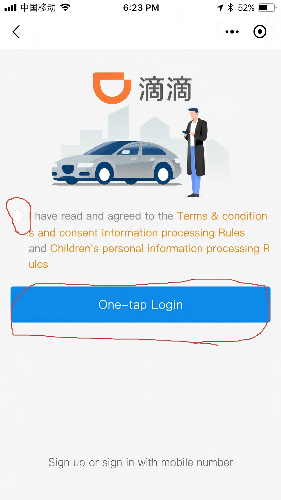
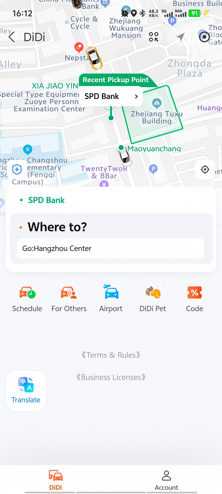
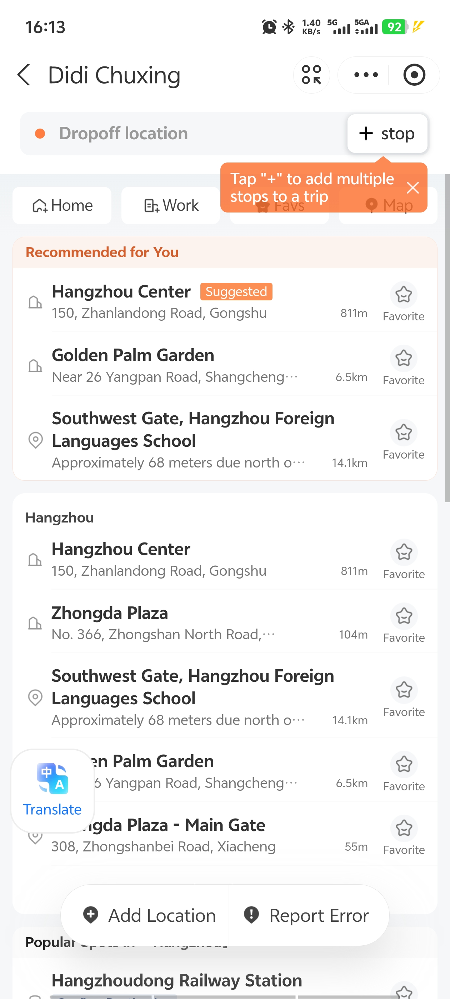
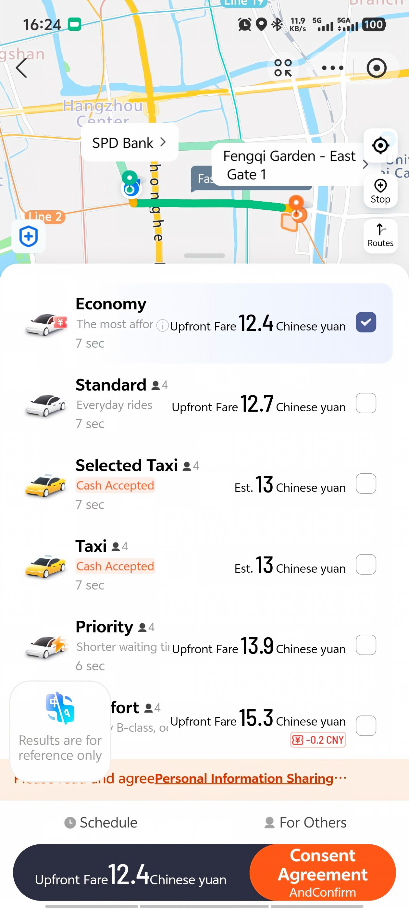
Via WeChat
Open WeChat, tap the search icon (🔍) at the top, type "didi," and select 滴滴出行 | 打车. The interface may show some Chinese, but the core flow — Where to? — Confirm — ride — is visual and easy to follow. Payment defaults to WeChat Pay.
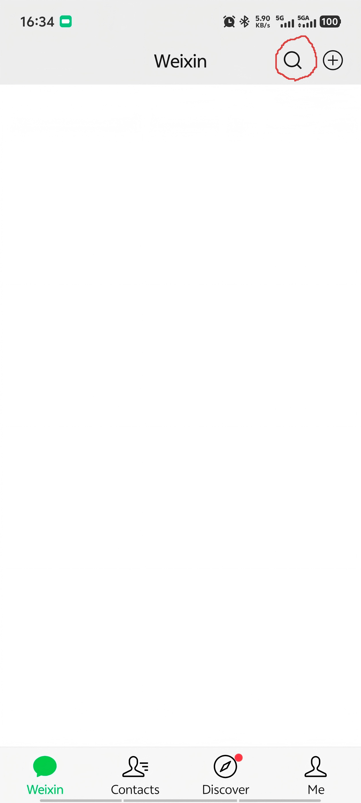
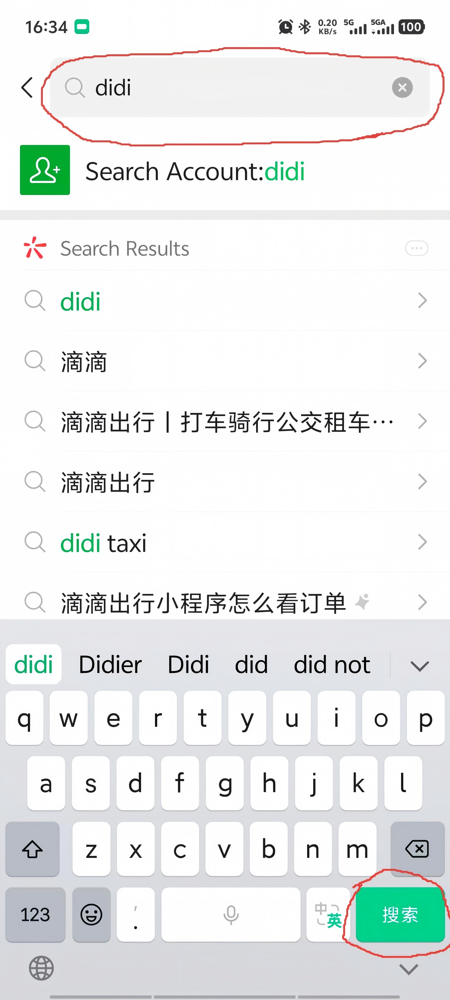
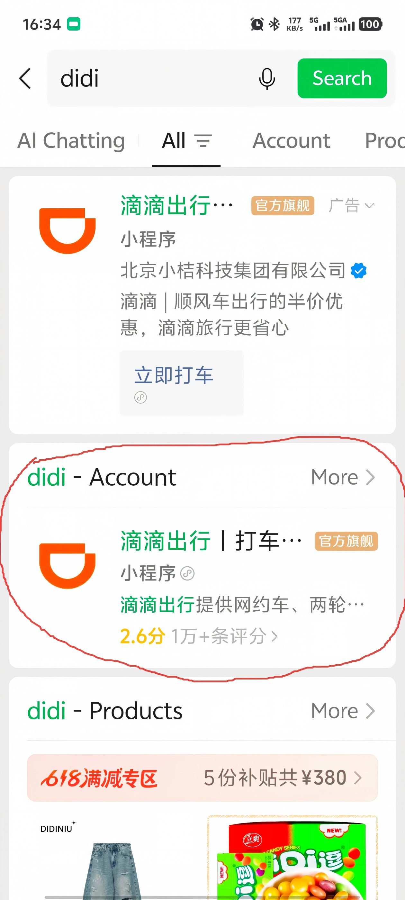
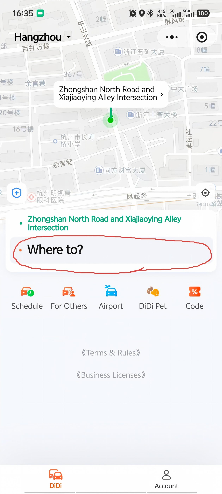
What About Amap and CaoCao?
Amap (高德地图) has built-in ride-hailing that aggregates multiple platforms including CaoCao (曹操出行) and others. The interface is primarily in Chinese and the English support is limited. For foreign travelers, start with DiDi — it's by far the most internationalized option, with the best English interface, foreign phone number support, and international card acceptance. Amap's ride-hailing is a handy backup if DiDi has a long queue during peak hours.
Common Mistakes
1 Downloading "DiDi Rider" instead of "DiDi China: Ride Hailing"
This is the most common mistake — and the most frustrating, because DiDi Rider opens, looks normal, and shows zero available cars. DiDi Rider is for countries outside China. You need the China-specific app. Check your app icon: if it says "DiDi Rider," delete it and search again.
2 Not matching the license plate before getting in
At busy pickup spots — train stations, airports, shopping streets — multiple people are waiting for their DiDi. Always check the license plate number in the app against the car before opening the door.
3 Setting the wrong pickup point
GPS is accurate to about 10–20 meters. In dense areas with multiple exits (metro stations, malls), the driver may end up on the wrong side of the building. Look at the map in the app and make sure the pickup pin is on the correct road. If you're at a metro station, specify which exit you're at.
4 Forgetting the last-4-digits trick
Most DiDi drivers ask for the last 4 digits of your phone number when you get in. It's their passenger verification. Most drivers don't speak English, and spelling out digits through hand gestures while the car is idling is stressful. Screenshot the digits once, favorite the photo, and you're set for the entire trip.
Things to Know
- It's cheap. ¥12–18 for short trips, ¥20–50 across town, ¥80–150 for airport runs. All displayed upfront.
- Multiple car types. DiDi Express (standard), DiDi Comfort (nicer cars, ¥5–10 more), DiDi Premier (luxury, ¥15–30 more), and DiDi Taxi (traditional metered taxi booked through the app). Start with Express.
- Peak hours matter. During rush hour (7:30 — :00 AM, 5:30 — :00 PM) and in heavy rain, prices surge and wait times double. If you can, wait 20 minutes after peak.
- No tipping. Not expected, not built into the app. The fare you see is the fare you pay.
- Seatbelts. Drivers wear them. You should too. Back-seat belt enforcement varies by city.
- Auto-pay is capped at a set amount per trip. For anything above that (rare for standard rides), the app asks for manual confirmation.
FAQ
Can I use DiDi with a foreign phone number?
Yes. Since late 2024, DiDi China supports registration with international phone numbers from most countries. You don't need a Chinese SIM card. The app also has a full English interface.
Do I need Alipay or WeChat Pay to use DiDi?
No. The standalone DiDi app supports international credit cards directly — you can link a card without going through Alipay or WeChat. If you use DiDi inside the Alipay or WeChat mini-programs, payment goes through those platforms instead.
Can I pay with cash?
Only if you specifically select "DiDi Taxi" (traditional taxi booked through the app) and pay the driver directly. But most travelers avoid this. China is largely cashless, and drivers may not have change. Auto-pay is faster and more reliable.
What if the driver cancels?
It happens — the driver accepts, then cancels 30 seconds later. Don't take it personally. The app immediately reassigns to another driver. During peak rain or rush hour, you might get 2–3 cancellations before one sticks. Just wait.
Is DiDi safe?
Yes. Every ride is GPS-tracked in real time. The app shows driver identity, car plate, and rating before you get in. You can share your trip status with a friend, and there's a one-tap emergency alarm connected directly to police (110). Chinese ride-hailing is generally safer than hailing a random taxi in many places.
Get the Free China Arrival Checklist
DiDi setup, metro, shared bikes, Alipay — everything you need for getting around Chinese cities, in one PDF.
Get the Free Checklist